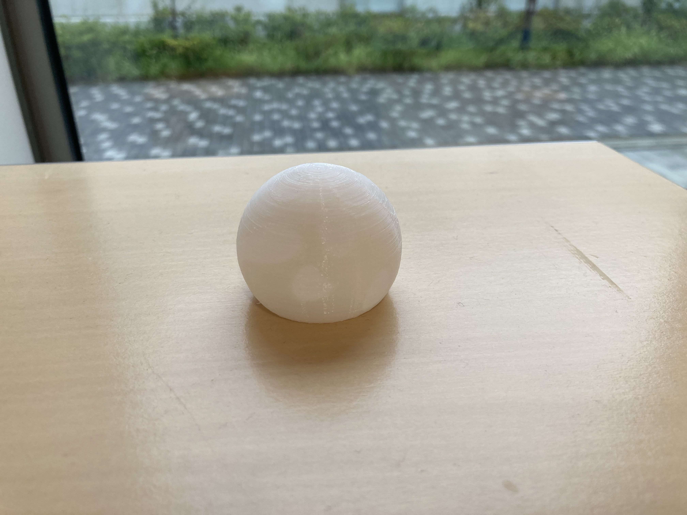
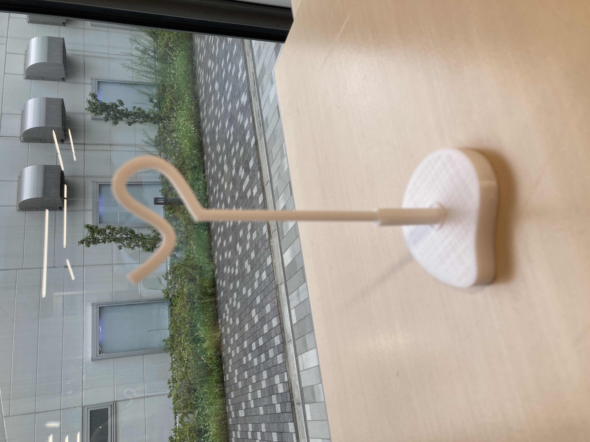
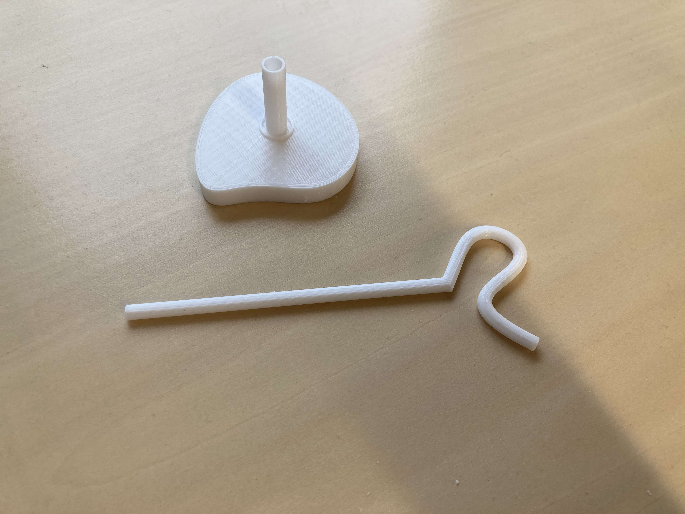
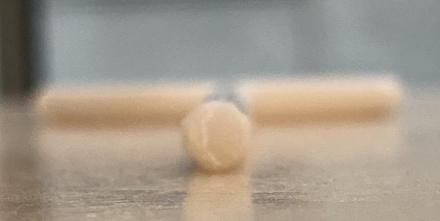
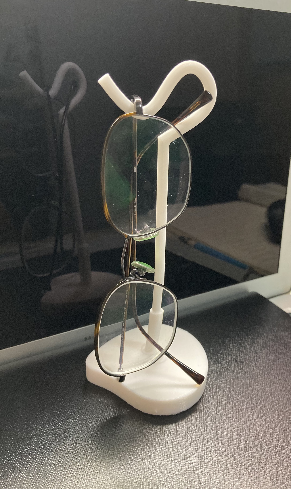
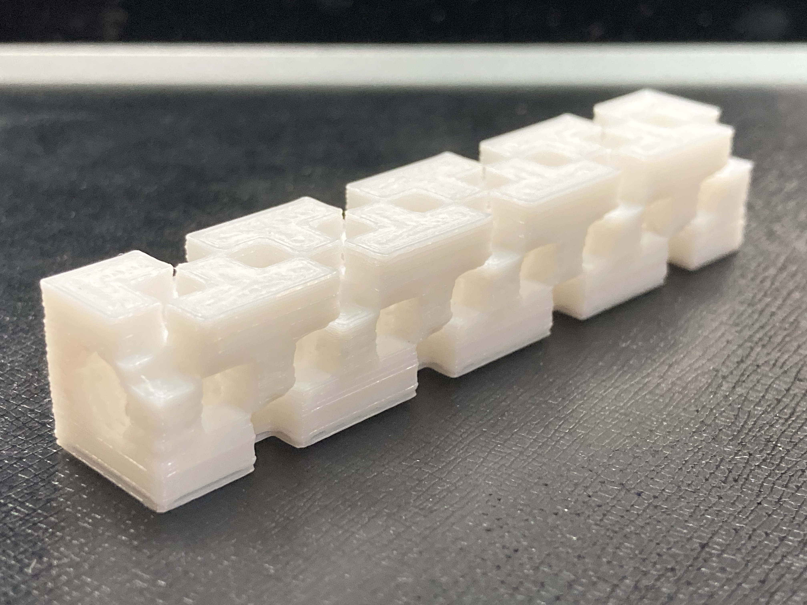

夏の活動
＜１＞ランプシェイド

球体の小さいランプシェイドを作成した
ライトをつけるとこのような感じ
外側から見たらただの球体だが、球体の内側の厚さを所々変えることでライトをつけると模様あ浮かび上がるようにモデリングした。
この構造ができるかどうかお試しで出したので、模様は決して美しいと言えるものではない。改良の余地あり。
＜２＞メガネスタンド
また、〇〇スタンドである。

これはこの写真の形のまま印刷したわけではない。

このようにパーツで分けて同時に印刷した。
この棒を曲げたようなパーツの形にもポイントがある。

断面が８角形になっておりしっかりとプリンターの台に着くような形にしてある。
実際に使うとこのように

使うことができた
＜３＞「いい感じに写真を撮ってもらった」
・new! その１
前回のなめらかさを出したペンとは趣向を変えて、角を強調したデザインにした。
前のペンと同じようにネジ構造を持つが、驚くことにこのペンは横向きで印刷している。

この向きで印刷してもネジが機能することを確認できた。
さらに、横にも穴が空いた立体的な構造であるにも関わらすサポートなしでそこそこきれいに出すことができていた。
多分ちょっとくらいの穴ならサポートなしで出せる。
・new！ その２
ペン完成版。しろい、フリー素材感がすごい。
右上に写っているものも、私の作成したペンたてである。３Dプリンターでないとと加工が難しい形であることを意識している。